Neumann exterior scattering problem
This tutorial introduces how to use the toolbox NIHU to solve a simple exterior acoustic scattering problem.
The problem is scattering of an incident plane wave from a rigid sphere.
Contents
Surface and field point mesh
Generate a sphere surface with given radius and division parameter. The division parameter is the number of elements along the radius of the sphere.
R = 1; % radius nR = 10; % division parameter mesh = create_sphere_boundary(R, nR);
Check that the mesh is directed outward by plotting the normals with the toolbox function plot_elem_normals
figure; plot_mesh(mesh); plot_elem_normals(mesh); view(3);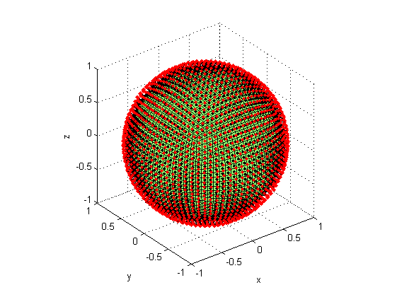
The maximal applicable frequency is determined by the rule of thumb
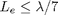
The maximal applicable wave number at each element of the mesh is computed by the toolbox function bemkmax.
ratio = 7; % elements per wavelength kmax_elem = bemkmax(mesh, ratio); % max. wave number per element figure; plot_mesh(mesh, kmax_elem); c = colorbar; ylabel(c, 'k_{max} [1/m]'); view(3);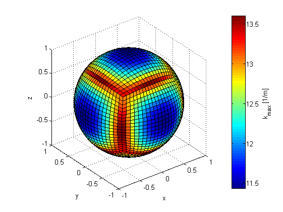
The minimum of these wavenumber values is the overall frequency limit of computations with this mesh. In the present example, the wave number is set slightly lower than the maximum.
kmax = min(kmax_elem); k = .9*kmax;
The field point mesh is an annular ring generated by revolving a line.
field = create_line([0 0 1.2*R; 0 0 3*R], 2*nR); field = revolve_mesh(field, [0 0 0], [0 -1 0], pi/4/nR, 4*nR); figure; plot_mesh(mesh); plot_mesh(field); view(3);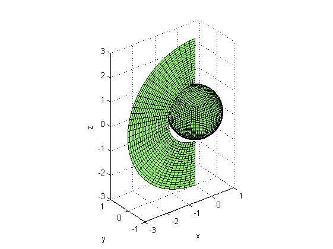
Incident wave field
The incident wave field is a plane wave travelling in a given direction. The incident pressure field 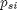 and pressure derivative field 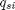 is computed in all surface DOF. In the present example, constant boundary elements are used, and the DOF locations are the element centers. The element centers and normals are obtained from the toolbox function centnorm, and the toolbox function incident computes the incident surface pressure and velocity field. For visualization purposes, the incident pressure field is computed in the field points (vertices of the field point mesh).
dir = [0 0 -1]; % plane wave direction [center, normal] = centnorm(mesh); [psi, qsi] = incident('plane', dir, center, normal, k); points = field.Nodes(:,2:4); % extract field points (vertices) pfi = incident('plane', dir, points, [], k); figure; plot_mesh(field, real(pfi)); shading interp; plot_mesh(mesh, real(psi)); c = colorbar; ylabel(c, 'Real incident pressure'); view(3);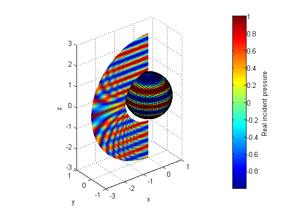
BEM matrices and solution
The BEM system matrices are generated by the toolbox function bemHG. The system of equations
is solved by matrix inversion. As a rigid scatterer is considered, the scattered velocity field is computed from the incident velocity as
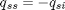
[H, G] = bemHG(mesh, k, 'const'); % Generate BEM matrices qss = -qsi; % Boundary cond. at a rigid boundary pss = H \ (G * qss); % solve the system
Field point pressure and total pressure field (post processing)
The scattered field point pressure 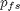 is computed from the scattered surface pressure and velocity as
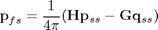
where the system matrices are computed by the toolbox function bemHG.
[H, G] = bemHG(mesh, k, 'const', points);
pfs = (H * pss - G * qss) / (4*pi);
The total pressure field in the field points and on the surface is computed as
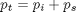
pst = psi + pss; pft = pfi + pfs; figure; plot_mesh(field, 20*log10(abs(pft))); shading interp; plot_mesh(mesh, 20*log10(abs(pst))); c = colorbar; ylabel(c, 'Pressure magnitude [dB]'); view(3);